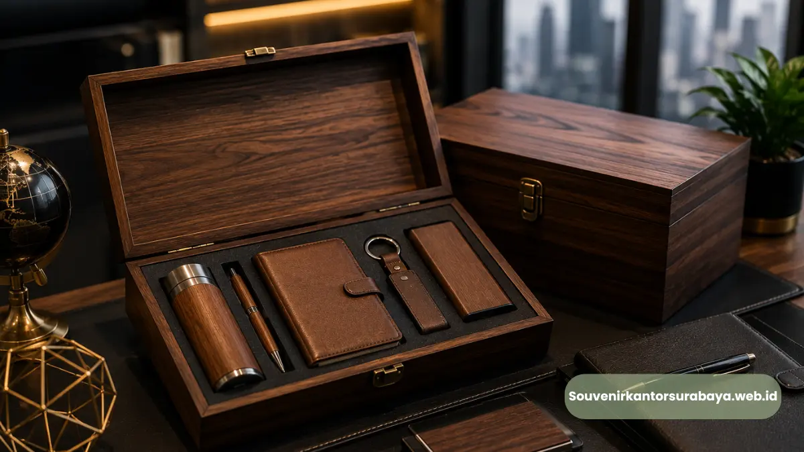

- Apa Itu Souvenir Kantor dan Mengapa Penting bagi Perusahaan?
- Jenis-Jenis Souvenir Kantor Surabaya yang Paling Diminati
- Bagaimana Cara Memilih Souvenir Kantor yang Tepat untuk Kebutuhan Bisnis?
- Berapa Kisaran Biaya Souvenir Kantor Custom Logo di Surabaya?
- Kesalahan Umum saat Memesan Souvenir Kantor Korporat
- Mengapa Memilih Souvenir Kantor Surabaya dari Kami
Souvenir kantor Surabaya adalah merchandise korporat custom logo yang dipesan perusahaan untuk klien, karyawan, dan acara bisnis, dengan kualitas premium, desain elegan, dan waktu pengerjaan yang cepat.
Produk ini menjadi bagian penting dari strategi branding perusahaan modern. Semakin banyak perusahaan di Surabaya menjadikan souvenir kantor surabaya sebagai investasi jangka panjang untuk memperkuat relasi bisnis.
- Souvenir kantor Surabaya tersedia dalam berbagai kategori, mulai dari alat tulis, drinkware, hingga produk custom kayu dan kulit.
- Layanan cetak logo dan custom branding tersedia untuk memperkuat identitas visual perusahaan pada setiap item.
- Cocok digunakan untuk gathering, seminar, ulang tahun perusahaan, hingga hadiah eksklusif bagi klien VIP.
- Proses pemesanan mudah, dengan opsi custom desain dan pengiriman ke seluruh Surabaya dan Jawa Timur.
- Tersedia opsi harga kompetitif untuk pemesanan dalam jumlah besar (bulk order) tanpa mengorbankan kualitas.
Apa Itu Souvenir Kantor dan Mengapa Penting bagi Perusahaan?
Souvenir kantor adalah barang bercetak logo atau identitas perusahaan yang diberikan kepada klien, mitra bisnis, maupun karyawan sebagai bentuk apresiasi dan alat branding.
Souvenir kantor penting karena berfungsi sebagai representasi citra profesional perusahaan di setiap kesempatan.
Di lingkungan bisnis Surabaya yang kompetitif, souvenir kantor bukan sekadar formalitas. Barang ini menjadi media komunikasi non-verbal yang menunjukkan bagaimana sebuah perusahaan menghargai relasi kerja.
Sebuah pena eksekutif dengan ukiran logo, misalnya, dapat meninggalkan kesan mendalam dibandingkan sekadar kartu nama.
Souvenir kantor juga berperan dalam memperpanjang durasi eksposur brand. Berbeda dengan iklan digital yang hilang dalam hitungan detik.
Souvenir fisik seperti tumbler, tas kerja, atau organizer akan digunakan berulang kali oleh penerimanya, sehingga logo perusahaan terus terlihat dalam jangka waktu lama.

Jenis-Jenis Souvenir Kantor Surabaya yang Paling Diminati
Souvenir kantor Surabaya yang paling diminati saat ini mencakup produk fungsional bernilai guna tinggi seperti tumbler custom, tas kerja, alat tulis eksekutif, dan produk berbahan kayu maupun kulit. Kategori ini dipilih karena memadukan kepraktisan dengan kesan profesional.
Souvenir Alat Tulis dan Perlengkapan Kerja
Pena eksekutif, notebook custom cover, dan set alat tulis premium masih menjadi pilihan favorit karena relevan digunakan setiap hari di lingkungan kerja formal maupun acara seminar.
Souvenir Drinkware Custom Logo
Tumbler stainless, mug keramik, dan botol minum custom logo digemari karena fungsinya yang tinggi.Produk ini sering dipilih untuk acara gathering karyawan maupun goodie bag seminar korporat.
Souvenir Berbahan Kayu dan Kulit
Untuk kesan yang lebih premium, souvenir berbahan kayu ukir atau kulit sintetis embossed logo banyak dipilih perusahaan untuk hadiah eksklusif bagi klien VIP, mitra strategis, atau relasi bisnis tingkat direksi.
Souvenir Tas dan Goodie Bag Korporat
Tas jinjing, tote bag kanvas, hingga goodie bag spunbond custom logo umum digunakan untuk kebutuhan seminar, workshop, dan event korporat berskala besar karena praktis dibagikan dalam jumlah banyak.
Bagaimana Cara Memilih Souvenir Kantor yang Tepat untuk Kebutuhan Bisnis?
Cara memilih souvenir kantor yang tepat adalah dengan menyesuaikan jenis produk dengan tujuan pemberian, target penerima, dan anggaran yang tersedia.Ketiga faktor ini menentukan efektivitas souvenir sebagai alat branding.
Pertama, tentukan tujuan pemberian souvenir. Souvenir untuk klien VIP idealnya berbeda dengan souvenir untuk peserta seminar umum, baik dari sisi material maupun kemasan.
Kedua, pertimbangkan siapa target penerimanya, apakah internal karyawan, klien eksternal, atau mitra strategis, karena hal ini memengaruhi kesan yang ingin dibangun.
Ketiga, sesuaikan anggaran per unit dengan jumlah pemesanan agar kualitas tetap terjaga tanpa membebani biaya operasional perusahaan secara berlebihan.
Selain tiga faktor tersebut, konsistensi desain logo dan warna korporat pada setiap item juga penting diperhatikan agar souvenir benar-benar merepresentasikan identitas brand secara utuh.
Berapa Kisaran Biaya Souvenir Kantor Custom Logo di Surabaya?
Biaya souvenir kantor custom logo di Surabaya umumnya bervariasi tergantung jenis bahan, teknik cetak, dan jumlah pemesanan. Semakin besar volume pesanan, umumnya harga per unit akan semakin kompetitif.
Sebagai gambaran umum, souvenir berbahan dasar plastik atau kertas cenderung memiliki harga satuan lebih terjangkau dan cocok untuk pembagian massal.
Sementara souvenir berbahan kayu, kulit, atau logam biasanya berada pada rentang harga menengah ke atas karena proses produksinya lebih detail.
Teknik cetak seperti sablon, bordir, ukir laser, atau emboss juga memengaruhi biaya akhir produk. Untuk mendapatkan estimasi biaya yang akurat sesuai kebutuhan spesifik Perusahaan.
Konsultasi langsung dengan tim produksi sangat disarankan agar anggaran dan kualitas dapat disesuaikan secara optimal.
Kesalahan Umum saat Memesan Souvenir Kantor Korporat
Beberapa kesalahan umum yang sering terjadi saat memesan souvenir kantor korporat antara lain memesan terlalu mendekati tanggal acara, tidak menyiapkan file logo dengan resolusi memadai, dan memilih produk tanpa mempertimbangkan target penerima.
Pemesanan mendadak sering kali membatasi pilihan produk dan meningkatkan risiko keterlambatan produksi, terutama untuk item custom yang memerlukan proses cetak atau ukir.
File logo yang tidak sesuai standar cetak juga dapat menurunkan kualitas hasil akhir, sehingga logo terlihat pecah atau tidak presisi.
Selain itu, memilih souvenir hanya berdasarkan harga termurah tanpa mempertimbangkan daya tahan dan kesan yang ingin dibangun dapat mengurangi efektivitas souvenir sebagai alat branding jangka panjang.
Mengapa Memilih Souvenir Kantor Surabaya dari Kami
Perusahaan Anda membutuhkan mitra produksi souvenir yang memahami kebutuhan korporat secara menyeluruh, mulai dari konsultasi desain, pemilihan material, hingga ketepatan waktu produksi.
Souvenir Kantor Surabaya hadir sebagai solusi menyeluruh bagi perusahaan yang ingin menghadirkan kesan profesional melalui setiap detail merchandise.
Tim produksi berpengalaman menangani berbagai skala pemesanan, mulai dari kebutuhan internal kantor hingga event korporat berskala besar, dengan pilihan material yang dapat disesuaikan dengan identitas brand perusahaan Anda.
Setiap proses custom logo dikerjakan dengan memperhatikan detail agar hasil akhir benar-benar merepresentasikan citra bisnis Anda di mata klien maupun karyawan.
Jangan biarkan kesempatan membangun kesan profesional terlewat begitu saja. Konsultasikan kebutuhan souvenir kantor perusahaan Anda sekarang melalui souvenirkantorsurabaya.web.id dan dapatkan penawaran terbaik sesuai anggaran serta tenggat waktu acara Anda.
Souvenir kantor Surabaya adalah investasi branding yang efektif bagi perusahaan yang ingin membangun kesan profesional dan mempererat relasi dengan klien maupun karyawan.
Pemilihan jenis produk, material, dan waktu pemesanan yang tepat akan menentukan sejauh mana souvenir tersebut mampu merepresentasikan identitas brand secara maksimal.
Segera konsultasikan kebutuhan souvenir kantor perusahaan Anda melalui souvenirkantorsurabaya.web.id agar acara maupun program apresiasi klien Anda berjalan lebih berkesan.

Hawa Nadira
Tim penulis CorporateGifts ID berfokus pada strategi souvenir kantor, merchandise korporat, dan inovasi brand untuk klien B2B.
Keahlian: Branding perusahaan, produksi souvenir, paket event, desain materi promosi.
Artikel Terkait

Ragam Souvenir Kantor Elegan untuk Mitra Bisnis di Surabaya
Pelajari ragam souvenir kantor elegan untuk mitra bisnis di Surabaya, dari alat tulis premium hingga aksesori korporat untuk memperkuat hubungan kerja sama.
Baca Selengkapnya
Ide Souvenir Kantor Elegan untuk Mitra Bisnis
Ide souvenir kantor elegan untuk mitra bisnis, mulai dari buku agenda kulit, alat tulis eksekutif, hingga aksesori kerja bermaterial kulit atau logam.
Baca Selengkapnya
Tas Kerja Kulit Pria Eksekutif Perusahaan Surabaya Premium
Tas kerja kulit pria eksekutif perusahaan Surabaya merupakan pilihan tas dokumen premium berbahan kulit asli yang dirancang khusus untuk menunjang profesionalisme.
Baca Selengkapnya